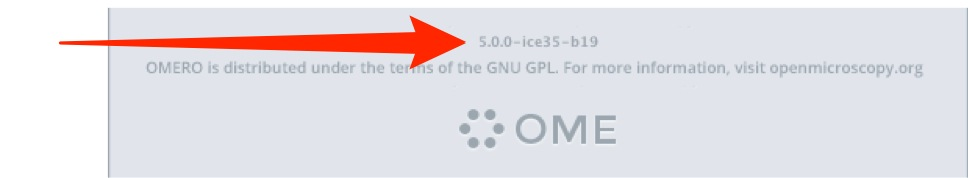
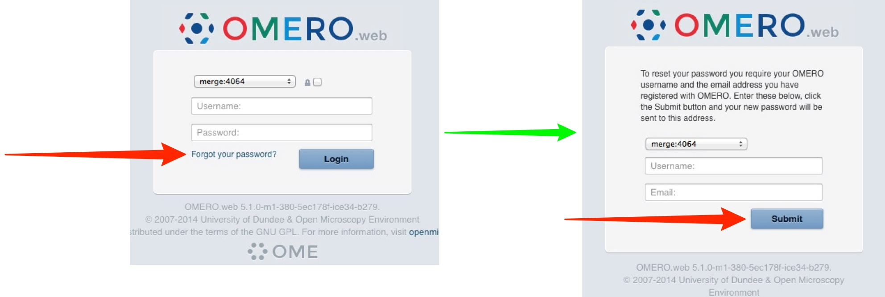
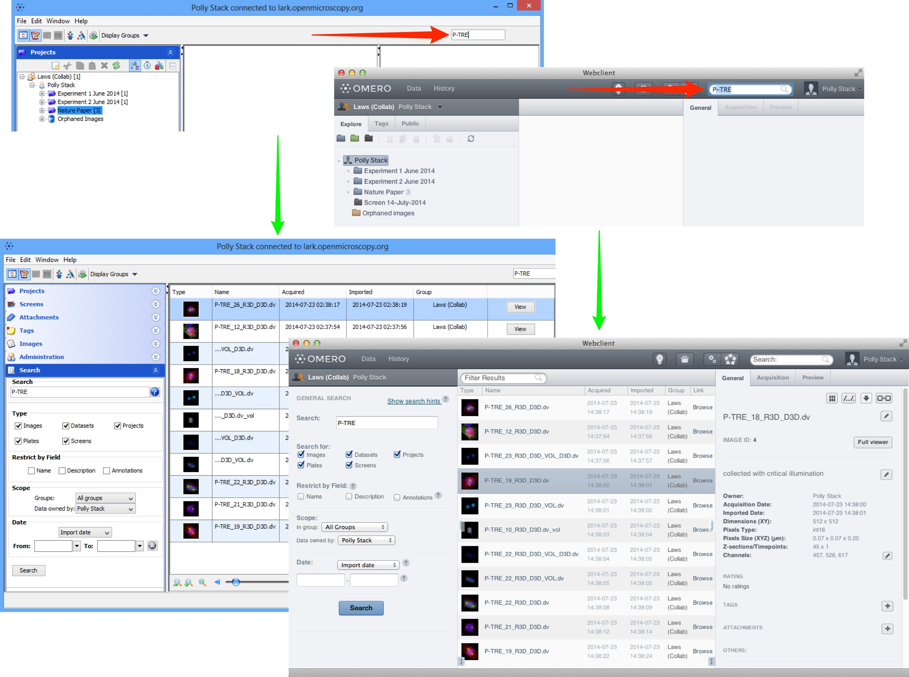

These pages contain the User Help for applications which can connect to an OMERO server or use OMERO plugins.
The User Guides for the current versions are listed in the main menu, for all OMERO applications, including OMERO.insight, OMERO.web, OMERO.figure and OMERO in ImageJ and Fiji.
The Guides for the current versions are listed in the main menu, and the Guides for Previous Versions page has links to archives of older versions.
The Training Course Material page contains links to material for printing out and using in training sessions, ZIP archives of the PDFs for all the current versions, customised versions of some of the Guides and other resources such as Omnigraffle® and Word® files.
The current release versions of OMERO.insight are 5.0.8 and 4.4.12. You can tell what version of OMERO.insight you are using by looking at the login screen.

All material is covered by the Creative Commons Attribution 3.0 Unported License - you are free to share or adapt content as long as you credit the Open Microscopy Environment. The exception to this is the screenshots and videos which can only be used for non-commercial purposes.
New in OMERO.insight 5.0
Reset Your Password
To reset your password, go to the OMERO.web login page.
Click on the Forgot your password? link below the password text box to open the reset screen.
Enter your OMERO user name and email address and click Submit.
Your new password will be emailed to your OMERO email address.

Upgraded Search
The Search functionality in OMERO.insight and OMERO.web has been upgraded and harmonised between the two clients.
See the Search page for details of how to search for Images, Datasets, Projects, Screens, Plates and in annotations including tags, attachments and comments, plus the use of wildcards and other tips.
